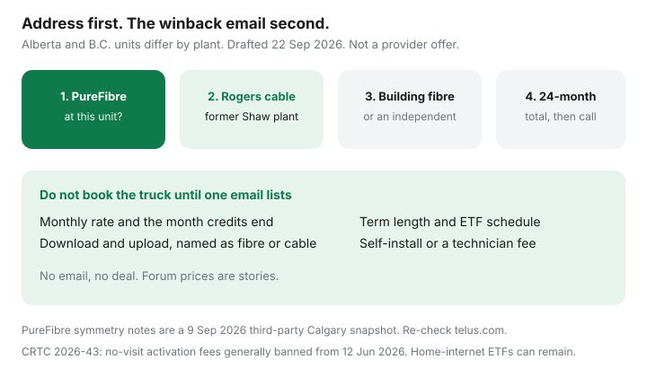

Internet · Alberta and B.C.
Telus PureFibre vs Rogers/Shaw Cable in Alberta and BC: How to Shop the Winback
In Alberta and British Columbia, a lot of households are still paying a legacy cable rate on the old Shaw plant while a PureFibre quote sits unopened. Telus and Rogers will both tell you they are the obvious choice. Neither is, until you know what is actually in the wall at that unit. This is an address-first winback playbook for middle-aged households who are tired of chasing a number they saw in a forum. It is not a Telus offer, and Saving Optimizer has no ISP partnership.
Disclosure: Education only. ISP plans are an offer type we may describe; we do not claim a live Telus, Rogers, Shaw, Moby, Oxio, or TekSavvy partnership, and we do not earn a commission from the calls below. Community winback figures are self-reports. Public cards change by address. Confirm on the provider site at the civic address.
Key takeaways
- Shop the unit, not the city. PureFibre is fibre to the premises. Rogers in Alberta and B.C. is mostly the former Shaw cable plant, with fibre only where that address actually has it.
- A third-party Calgary guide updated 9 Sep 2026 says most current PureFibre tiers are symmetrical, the 1.5 Gbps tier is often 1.5 Gbps down and 940 Mbps up, and the Calgary page promotes up to 3 Gbps where available. That is a snapshot. The address tool is the quote.
- Winback is one future-dated cancellation plus a competing number you will take. Monthly empty threats train the desk to ignore you and can create a term you did not mean to sign.
- CRTC 2026-43, in force 12 June 2026, generally bans activation and no-visit plan-change fees. A disclosed fixed-term internet ETF can still apply. The optical terminal stays with Telus.
- Cable still wins when the unit has no fibre, when 24-month download math is lower, or when a sports pack you will watch is cheaper inside Rogers than bought separately.
Confirm the technology at the unit: PureFibre versus cable coax
Ask a blunt question and write the answer down: “Is this fibre to the premises, and what is the maximum upload to the gateway?” PureFibre runs glass to the home. Older Telus service can still finish on copper. A condo or townhouse may have a building agreement that only lets one carrier into the riser. Two houses on the same Calgary or Surrey street can have different plants. The postal code is not a quote.
Rogers operates the former Shaw network across much of Alberta and British Columbia. Cable is the common wired product: fast downloads, uploads that usually trail symmetrical fibre. Rogers also shows multi-gig or fibre at some addresses. Read the technology line at checkout. If the upload is a small fraction of the download, you are shopping coax, whatever the brand colour is.
In participating Calgary and Edmonton condo buildings, Moby is a separate fibre check. A third-party Calgary guide updated 9 Sep 2026 listed Moby public rates at $45 for 150 Mbps, $65 for 300 Mbps, $75 for 600 Mbps, $85 for 1 Gbps, and $165 for 2.5 Gbps, symmetrical, with no data cap, and a price guarantee that excludes the 150 Mbps plan and discounted offers. Confirm the building on Moby’s own page. It is not a detached-house product.

Pull the advertised promo and the after-promo rate in writing
A homepage monthly is a teaser until you have four numbers: the price this month, the price when credits end, the month that happens, and the upload. Do this for Telus and for Rogers on the same afternoon, at the same civic address, before anyone is on the phone.
| Line | Telus at this unit | Rogers at this unit |
|---|---|---|
| Technology | PureFibre, copper-finish, or not serviceable | Cable, address fibre, or not serviceable |
| Download / upload | Write both, not the headline alone | Write both. Cable uploads often lag. |
| Monthly during credits | From the address checkout | From the address checkout |
| Monthly after credits | The number retention hopes you forget | Same |
| Term and ETF | Month-to-month, or a declining schedule | Same. A two-year lock is not free. |
| Install | Self-install, or a technician at the premises | Same. Name which fee is which. |
Independents belong on the same sheet where the plant qualifies. Oxio’s western cable plans are a no-term comparison with equipment included and online support, on notes in that 9 Sep 2026 Calgary roundup. TekSavvy has advertised Calgary fibre up to 1.5 Gbps down and 940 Mbps up at some addresses, plus cable, with phone support. The TekSavvy and Oxio guides cover how those retailers behave. Cart prices override any table.
Add the credits, then add the months after the credits, for 24 months. A $60 promo that becomes $110 in month 13 is not a $60 plan. Taxes extra. Mobility credits count only if you already wanted that phone plan. A $10 phone credit that costs $20 on the worse wireless plan is a loss. The same trap shows up on Bell’s Ontario cards; the Fibe playbook shows how to read it. Do not paste those Ontario dollars onto a Calgary bill.
Winback scripts that work without threatening to churn every month
Winback desks respond to a dated decision, not to a personality. The pattern that shows up in Alberta and B.C. threads is consistent even when the dollars are not: get the other company’s number first, then ask your current provider to beat a figure you will actually accept. One future-dated cancellation is the lever. Calling every month to “see what’s new” teaches them you will not leave, and a casual “cancel me” can start a term or an ETF clock you did not want.
Say this, then stop talking:
- “I have a written quote at this address for [download/upload] at [$] until [month], then [$]. I will switch on [date] unless you can beat that on PureFibre / on cable.”
- “Please email the monthly rate, the date credits end, the upload, the term, the ETF schedule, and whether install is self-serve or a technician. I will not book a visit from a phone call.”
- If they offer a speed you do not need, repeat the tier you asked for. A free jump to multi-gig that your Wi-Fi cannot light is not a discount.
Forum prices are ceilings you might hear, not a tariff. RedFlagDeals and local subreddits have years of two-year gigabit stories and years of loyalty desks that would not match. Quote your street. If the email never comes, the offer does not exist. The Rogers script is the same discipline on the other desk.
Modem, install, and contract gotchas in Alberta and B.C.
On PureFibre, the optical network terminal is Telus equipment. A DOCSIS modem from a retailer does not replace it. Your own router behind the gateway is the usual do-it-yourself, covered in buy versus rent. Extra Wi-Fi pods are a rental decision. Price them before you accept “we’ll add a pod.”
Installation: after 12 June 2026, a fee whose only job is activation, with no technician, is the kind of charge CRTC 2026-43 and the CCTS fee page (posted 2 Sep 2026, re-read 22 Sep 2026) say is generally prohibited. A truck roll at the house can still be billed. Ask which one is on the work order, especially in a strata building where the tech needs a utility room. A refused entry is not a free retry.
Contracts: Internet Code rules still allow a disclosed fixed-term early cancellation fee that must fall to $0 by the lesser of 24 months or the end of the term. Month-to-month service should not have one. The wireless “no ETF without a phone subsidy” sentence is not your home-internet contract. Read the schedule before you sign a winback that looks cheap in month one. Details are in the ETF guide.
Strata and rentals: ask the council or landlord which carriers can pull a new line, whether a hole may be drilled, and whether internet is already bulk-billed in the condo fee. Bulk internet you cannot opt out of makes a winback a second bill, not a save.
When Shaw or Rogers cable still wins on price or sports packs
Keep cable, or take the Rogers winback, when any of these are true:
- The unit cannot get PureFibre, and the cable upload covers how you work. Browser, email, and one video call do not need symmetrical gigabit.
- The 24-month cable total, after credits end, is lower than fibre by enough to matter, and nobody in the home uploads large files while someone else is on camera.
- You will actually watch the sports pack. If Rogers or the old Shaw TV bundle is cheaper than the separate sports apps you would buy, the bundle can win. If you will not open those channels, you are paying for a logo. Price that choice in the cord-cutting stack, not in the installer’s script.
- You are inside a term and the remaining ETF is larger than the save. Wait, or negotiate a credit. Do not light a fee to feel decisive.
Fibre still wins when the written price is close and the upload is the reason you called: two work-from-home calls, cloud backup, or sending video. A low monthly rate that drops those calls is an expensive line.
A 30-day switch calendar that avoids double billing
- Day 1. Run Telus, Rogers, and one independent or building-fibre check at the full unit address. Fill the table above.
- Day 2. Call the company you want to leave. Future-date the cancel about three weeks out. Ask for the email before you agree to a save.
- Day 3 to 7. Compare the email with the competing quote. Fix any “month-to-month” confirmation that was sold as a two-year lock, or the reverse.
- Day 8 to 20. Book install only after the email matches. Keep the old service until a wired device on the new line loads a normal workday. Do not create a gap, and do not pay two gateways for a month because nobody wrote the dates down.
- Day 21 to 30. Cancel the loser effective the day the new line works. Photograph serial numbers. Return rental gear with a receipt. Calendar the month the credits end, 45 days ahead.
If you are moving in the same month, use the move checklist instead of stacking a winback on top of a change of address. One decision at a time.
Sources & date stamps
- internetadvice.ca, Calgary internet guide, updated 9 Sep 2026 — PureFibre symmetry note, 1.5 Gbps / 940 Mbps upload pattern, Calgary “up to 3 Gbps” claim, Rogers on the former Shaw network, Moby public rates, Oxio and TekSavvy address checks. Third-party snapshot. Re-check the providers.
- CRTC Internet Code, simplified, and Telecom Regulatory Policy CRTC 2026-43 — fixed-term ETF shape; activation and modification fees. CCTS, “Which fees are allowed?”, posted 2 Sep 2026, re-read 22 Sep 2026.
- r/alberta, r/Edmonton, and RedFlagDeals Telus and Rogers threads — self-reported winbacks. Not offers.
- Provider checkout at the civic address — the only price that belongs on your bill. Drafted 22 Sep 2026.
Frequently asked questions
Is every Telus internet plan in Alberta or B.C. PureFibre?
No. PureFibre means fibre to the premises. Older addresses can still be on copper-finish service, and many condos only have cable in the riser. Read the upload on the address quote. A third-party Calgary note updated 9 Sep 2026 says most current PureFibre tiers are symmetrical, while the 1.5 Gbps tier is often advertised at 1.5 Gbps down and 940 Mbps up. Confirm on telus.com at the unit.
Are Reddit or RedFlagDeals winback prices a Telus policy?
No. They are self-reports. Some households get a two-year rate and a bill credit after a future-dated cancel. Others are told loyalty cannot match Rogers. Use a same-address quote as the number you will actually take. Do not demand a screenshot from another city.
Can I bring my own modem to Telus PureFibre?
The optical network terminal is Telus equipment on fibre to the home. A retail DOCSIS modem does not replace it. You can often put your own router behind the gateway. On Rogers cable, retail customers are often issued the provider gateway. Confirm the current equipment page before you buy hardware.
Does a winback cancel my early cancellation fee?
Not by itself. CRTC 2026-43, in force 12 June 2026, generally bans activation and no-technician plan-change fees. A disclosed fixed-term home-internet ETF can still apply and must fall to $0 by the lesser of 24 months or the end of the term. Get the ETF schedule in the same email as the monthly rate.
When should I keep Rogers cable instead of chasing PureFibre?
When the unit has no fibre, when your use is download-heavy and the 24-month cable total is lower, or when a sports pack you will actually watch is cheaper inside the Rogers bundle than bought separately. A symmetrical upload you do not use is not a reason to pay more.